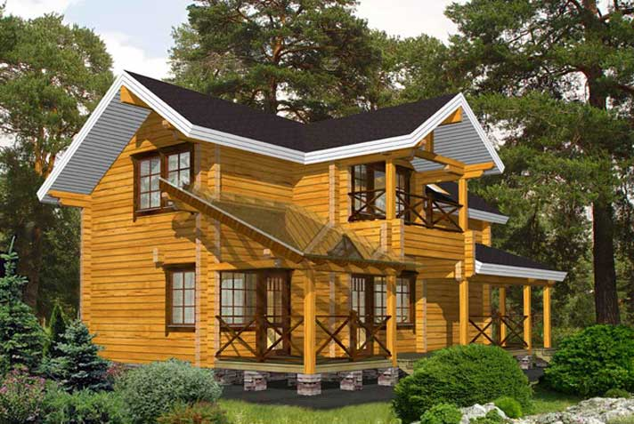

Деревянный дом
Нам нередко приходится слышать вопросы о том, как можно самостоятельно утеплить кровлю. Бывает, что при строительстве дома чердак не предполагался в качестве жилого помещения. Со временем семья разрасталась, требовалось больше места, и хозяева принимали решение облагородить подкровельное пространство, превратив его в уютную спальню или детскую.
Вот тут и возникает проблема плохо утепленной кровли. Если теплоизоляция крыши проделана некачественно, отопить чердачное помещение будет практически не возможно. О всесезонном проживании под крышей дома можно забыть. Однако монтаж теплоизоляции по плечу любому хозяину с руками и головой.
Теплоизоляция чердака
Нам нередко приходится слышать вопросы о том, как можно самостоятельно утеплить кровлю. Бывает, что при строительстве дома чердак не предполагался в качестве жилого помещения. Со временем семья разрасталась, требовалось больше места, и хозяева принимали решение облагородить подкровельное пространство, превратив его в уютную спальню или детскую.
Вот тут и возникает проблема плохо утепленной кровли. Если теплоизоляция крыши проделана некачественно, отопить чердачное помещение будет практически не возможно. О всесезонном проживании под крышей дома можно забыть. Однако монтаж теплоизоляции по плечу любому хозяину с руками и головой.

Советы по утеплению дачного дома
В основном потери тепла происходят через потолок, окна, стены и пол. Некомфортно находиться в помещении становится с того момента, когда разница между температурой стены внутри помещения и температурой воздуха начинает превышать 6 градусов, а перекрытий - 4 градуса.
Среди этих причин зачастую не столько нехватка сил.
- Благодаря особой обработке дикое бревно имеет естественный вид. Очень часто этот материал применяется для строительства бань, домов, саун.
- Деревянные бревна проходят особую обработку на станках, где им придают одинаковую форму и геометрию, пропиливают специальный паз в виде полукруга для монтажа, обрабатывают специальными веществами, которые препятствуют воздействию насекомых.
- Такой брус выполняется из массива, без использования клея. Деревянный дом из профилированного бруса имеет прекрасные теплоизоляционные качества. Дерево проходит специальную обработку на станках, где материалу придается точная прямоугольная форма, а также прорезаются пазы.
- Деревянные бревна пилят на доски, после чего сушат и склеивают под большим давлением, в результате получается клееный брус.
Дерево имеет меньший вес в сравнении с кирпичом и даже пенобетоном, что также позволяет экономить на транспортировке и устройстве фундамента. Отсутствие «мокрых» работ оштукатуривания позволяет избежать лишних трудозатрат, естественный вид древесины в сочетании с кровельными материалами добавит вашему дому выразительный и презентабельный внешний вид.
Деревянный дом и виды обработки древесины
На сегодняшний день деревянные дома становятся все более популярными. Дерево является самым экологически чистым строительным материалом.
- Дом из окоренного бревна
- Дом из калиброванного бревна
- Профилированный брус
Дерево имеет меньший вес в сравнении с кирпичом и даже пенобетоном, что также позволяет экономить на транспортировке и устройстве фундамента. Отсутствие «мокрых» работ оштукатуривания позволяет избежать лишних трудозатрат, естественный вид древесины в сочетании с кровельными материалами добавит вашему дому выразительный и презентабельный внешний вид.
Таблица
Цитата для гостевых и форумов
Дерево имеет меньший вес в сравнении с кирпичом и даже пенобетоном, что также позволяет экономить на транспортировке и устройстве фундамента. Отсутствие «мокрых» работ оштукатуривания позволяет избежать лишних трудозатрат, естественный вид древесины в сочетании с кровельными материалами добавит вашему дому выразительный и презентабельный внешний вид.
Вопрос:
В это широкий круг деятельности, включая традиционные формы взаимопомощи и самопомощи, официальное предоставление услуг и другие формы гражданского участия, которая осуществляется добровольно на благо широкой общественности
Ответ:
В это широкий круг деятельности, включая традиционные формы взаимопомощи и самопомощи, официальное предоставление услуг и другие формы гражданского участия, которая осуществляется добровольно на благо широкой общественности
Обратная связь\комментарий
Оно способно создать в помещении особую атмосферу, комфортный климат, который максимально приближен к природе. Стены дома из дерева «дышат», обладают свойством регулировать влажность воздуха: при избытке забирают влагу, а при недостатке отдают. Насыщенность дерева различными смолами положительно сказывается на организме. Уровень теплопроводности этого материала очень низок, что позволяет экономить средства на отоплении зимой.